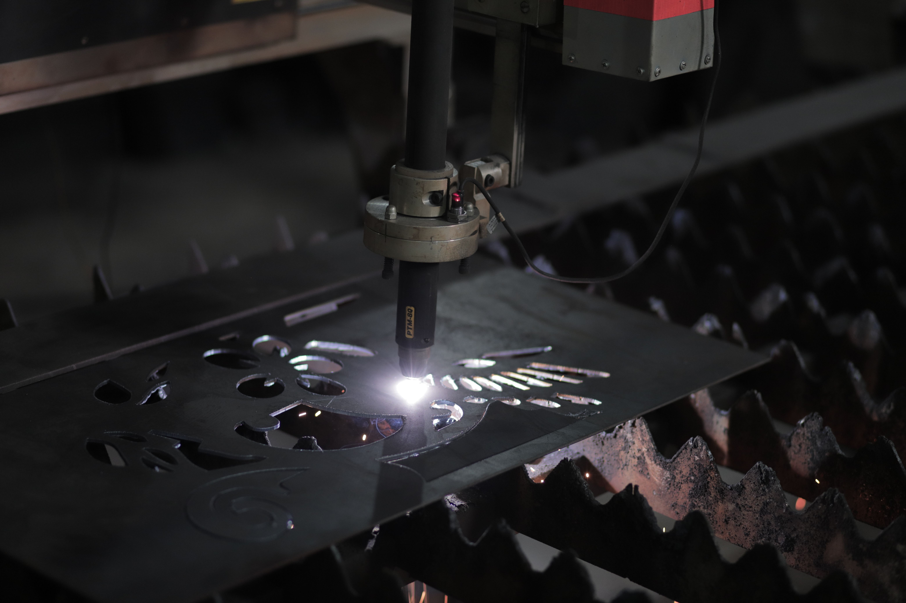
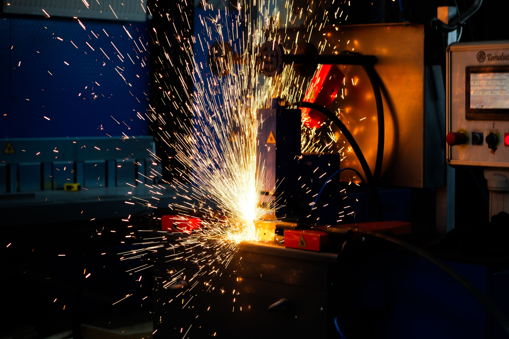

Fabricação completa com solda, caldeiraria e pintura (eletrostática, líquida ou galvanizada) — além de corte plasma, oxicorte (até 25mm) e dobra. Tudo em um único fornecedor, com entrega rápida.
A precisão da nova divisão de corte e dobra com a garantia de quem já movimenta cargas pesadas há 30 anos. Empresas que confiam na Astec para içar toneladas agora têm acesso à mesma exigência de qualidade nas peças que precisam.
Você corta, dobra e ainda precisa mandar soldar em outro lugar — e depois pintar em um terceiro. Cada etapa é um prazo, um frete e um risco de atraso. Na Astec, a peça entra como projeto e sai pronta para montagem.
Do corte ao acabamento, tudo sob o mesmo teto. Sem terceiros, sem retrabalho.
Oxicorte, plasma e serra de fita. Aço carbono e inox até 25mm (1 polegada).
Prensa dobradeira CNC — ângulos precisos para peças de caldeiraria leve e média, com rastreabilidade do aço.
Fabricação e montagem completa de estruturas metálicas. Do componente isolado ao conjunto finalizado.
Pintura eletrostática e galvanização (prata ou amarela) — sua peça sai pronta para uso, sem etapas externas.
Da chapa crua ao acabamento final, tudo sob o mesmo teto. Sem intermediários, sem etapas externas.
A Astec nasceu fabricando e mantendo pontes rolantes e talhas elétricas. Rigor técnico não é diferencial para nós — é obrigação.


Respondemos as dúvidas mais comuns de engenheiros e compradores técnicos. Não encontrou o que precisava?
Perguntar no WhatsAppSim. Trabalhamos com aço carbono e inox, com disponibilidade conforme pedido.
Até 25mm com plasma e oxicorte — o range ideal para caldeiraria leve e média.
Em até 24 horas após o envio do projeto. Para projetos simples, retornamos no mesmo dia.
Nossa equipe retorna em até 24 horas com o orçamento completo para a sua peça.
Falar no WhatsApp · (51) 3051-3302